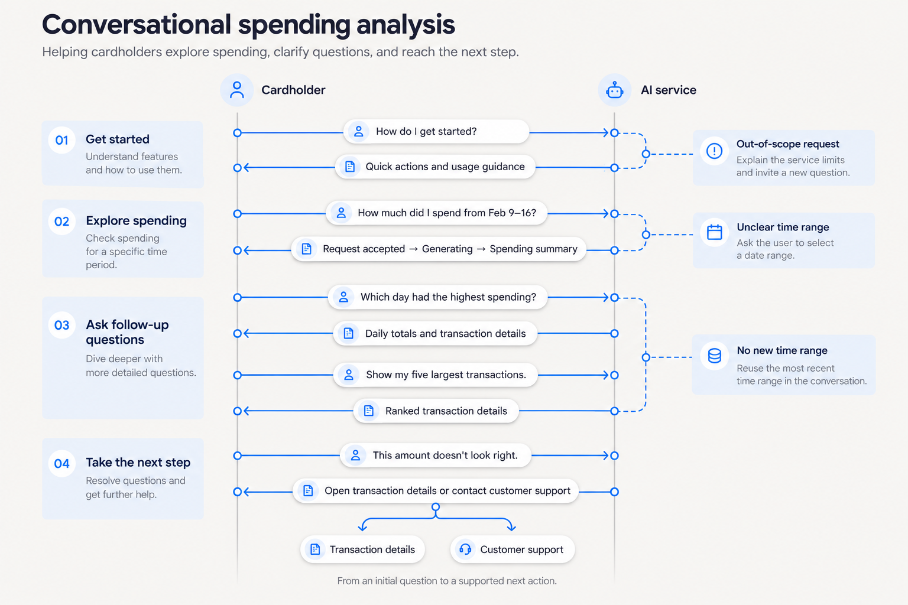
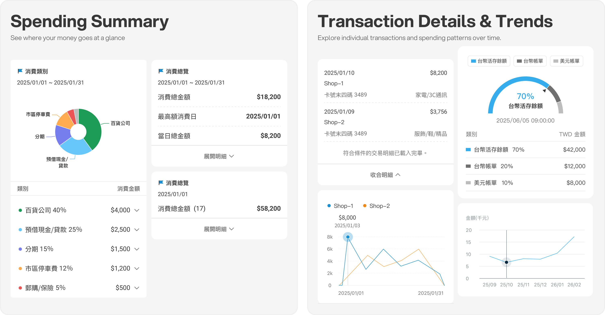
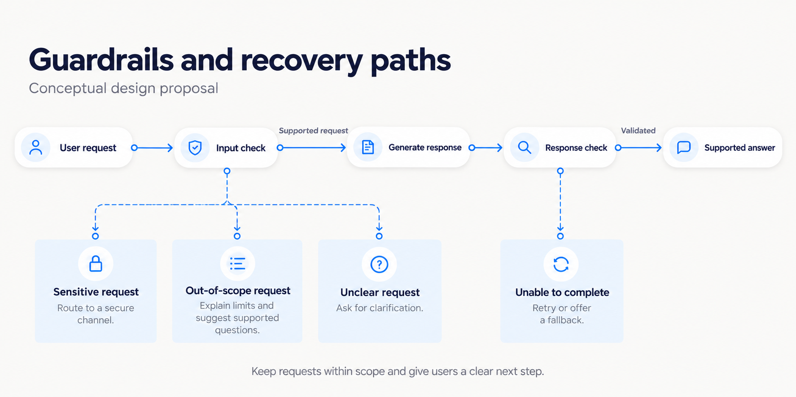

I led the design of a conversational banking feature that turns open-ended questions about spending into answers with summaries, charts, and transaction details.
RoleProduct Designer
StageConcept → launch
Usability test62% less time to complete a transaction-search task
Helping cardholders find the right transaction in their own words
Cardholders can ask questions and receive personalized answers, spending insights, and visual summaries based on their transaction data.
Discovery
Cardholders often had to work through complex search filters to find a specific transaction
Transaction records could help cardholders understand where and when they spent money. Their value depended on whether people could find the information they needed.
Research
Research by the team found that some cardholders struggled to find specific transactions. One recurring issue was that the merchant name they remembered did not always match the name in the transaction system, which made keyword searches less effective.
02 / PRODUCT STRATEGY
Turning an AI initiative into a useful cardholder experience
As the company explored generative AI, I focused on two experience principles.
01
Conversational AI Experience
We explored how conversational AI could simplify spending inquiries. Instead of learning a complex query structure, cardholders could describe a date, merchant, or amount in their own words to find the information they needed.
02
Product Integration
Rather than creating a separate AI product, we designed the service as an extension of the existing banking experience. It let cardholders move between AI and familiar banking functions without losing context.
Design challenge
Support open-ended questions while keeping answers clear and familiar banking tasks within reach.
DESIGN DECISION 01
Making AI part of the banking experience
I designed the experience as part of the existing banking product.
Because the company had no existing framework for AI services, we reviewed common conversational patterns and adapted them to the bank’s visual style and interaction rules.
Next, we looked for natural ways to fit AI into the banking app. We wanted cardholders to move between familiar banking features and the conversation without getting stuck in the AI service.
01
Enter the AI service
Start from a familiar banking feature and understand how the service works.
02
During the conversation
Ask a question, receive an answer, and follow guidance when the service needs clarification or cannot complete the request.
03
Next step
Act on the information or return to a familiar banking function to continue the task.

The journey connects open-ended questions to guidance, transaction details, and customer support.
Keeping the original task within reach
Users could minimize the AI experience to a floating action button and return to the original page without losing the conversation or their place.
Prototype of the floating action button interaction
Designing the service language
I also set voice and tone guidelines for the service so responses would feel neutral, professional, gentle, and appropriate for banking. The legal team defined legal requirements; my work focused on how the service communicated with users.
Language
Use Traditional Chinese and familiar local wording.
Relationship
Refer to the service as “our service” or “we,” and address users as “you.”
Tone
Avoid bureaucratic language, exclamation marks, emoji, and unnecessary apologies.
Typography
Use 「」 for emphasis instead of English quotation marks.
DESIGN DECISION 02
Designing clear and predictable AI responses
Open-ended questions still needed predictable answers. I defined how the service presented information, explained what was happening with the data, and guided cardholders when it could not find an expected result.
For a question such as “How much did I spend at 7-Eleven last month?”, the design identified the date range and merchant name, then showed matching spending data in a concise answer, transaction details, and a chart.

Two response views show a concise spending summary and the transaction details and trends behind it.
When the service cannot find a match
When the service could not find a matching transaction, the response needed to explain a possible reason and help cardholders adjust their question instead of offering a generic apology.
Empty-result example
“No matching transactions were found, or the transaction details may not have been posted yet.”
It names a possible reason instead of using a generic apology.
DESIGN DECISION 03
Handling unclear questions and failed responses
To build trust, I mapped how the service should respond to supported, unclear, sensitive, or out-of-scope questions, as well as incomplete answers. The flow checks questions and answers, asks for clarification when needed, and gives users a next step when something goes wrong.

OUTCOME & REFLECTION
Testing and reflection
Usability testing62%
Less time to find spending information
In a usability test, 20 participants completed tasks to find specific spending information. They took 62% less time than with traditional filter-based search.
Designing conversational AI is not only about adding a prompt box. The experience depends on how answers are structured, how limits and failures are communicated, and whether users can return to familiar product flows when conversation is not enough.